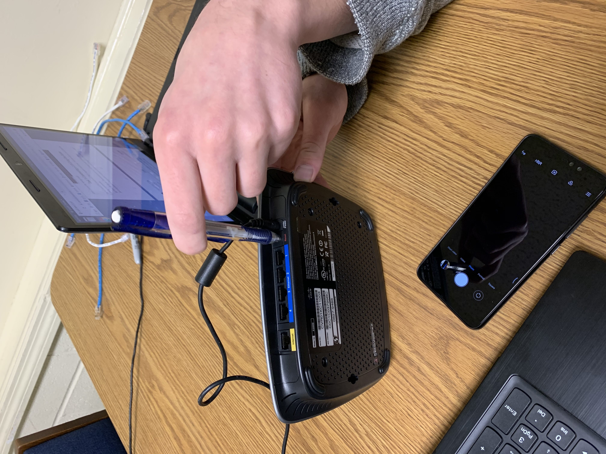
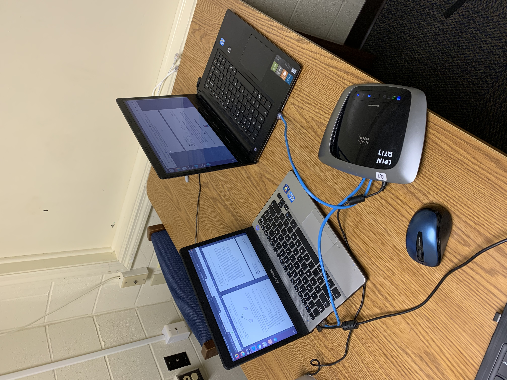
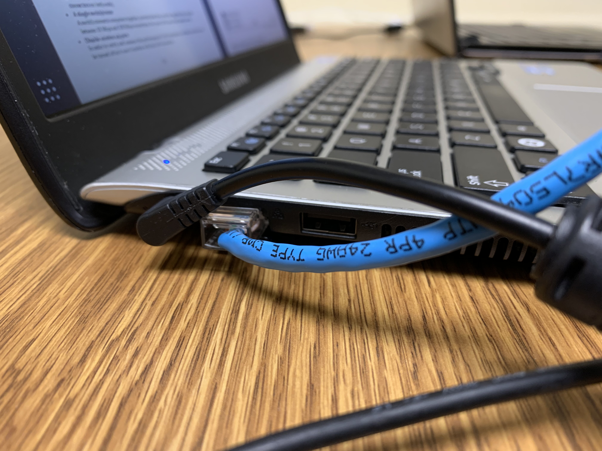
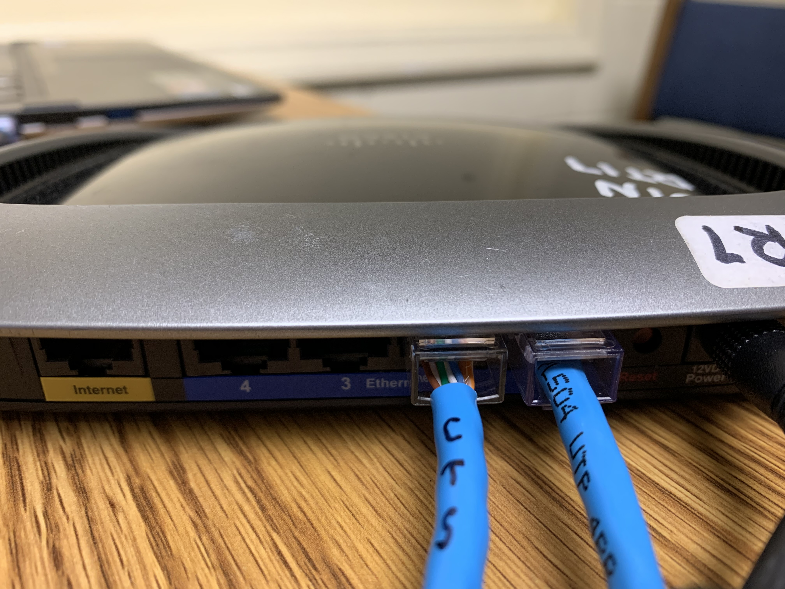
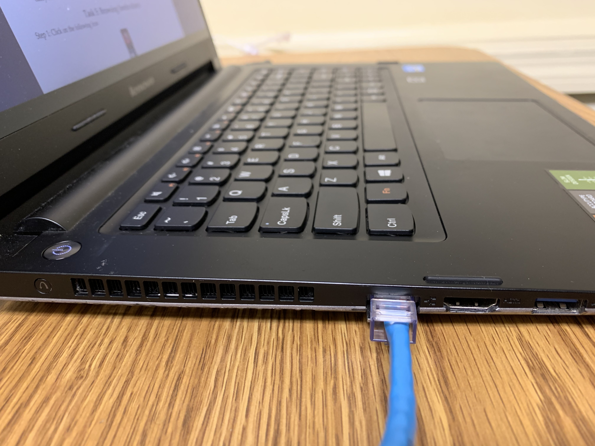

Section 4: Constructing a LAN Using One Switch
TODO: ADD SCREENSHOTS OF CONFIRUGING IP, #3
-
- Plug the switch into the wall.
- Reset the switch by pressing and holding the reset button
on the back for 10 seconds.
- Connect the switch and one of the computers using an
ethernet cable. Connect the ethernet port on your computer to
any of the ethernet ports on the switch.





-
- Find the IP of your switch by clicking the top right option
bar -> Wired Connected -> Wired Settings -> the gear under
the Wired section. The IP is the Default Route. Copy the
IP.
- Paste the IP into the url to pull up the configuration
page.
- Traverse to the setup tab and the Network Setup section of
that tab. Under Router IP, change the Local IP Address to
the desired group IP.
- Click Apply Settings. Since your switch's IP has been
changed, reset your computer to reset the switch IP. Enter
the new IP into the url field and return to the setup
tab.
- Change the Start IP Address to the desired start IP. Change
Maximum DHCP Users to the desired number. Click Apply
Settings.
- To ensure setup has been done properly, open the terminal
and type
$ ifconfig
and ensure the IP in the
enp2s0 section is in the range you specified. If it is, you
are done!
- IP Range: 192.168.101.0 to 192.168.101.253
- Subnet Mask: 255.255.255.0
| Time |
Reciever Screenshot |
Sender Screenshot |
| Start |
 |
 |
| 2.5 Minutes |
|
 |
| 5 Minutes |
|
 |
| End |
|
 |
{kind=link}
{kind=link}
{kind=link}
{kind=link}
{kind=link}